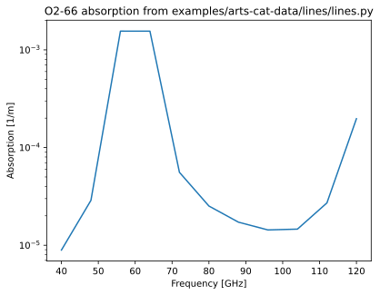

Lines
"""
This file will showcase how you can load line data from arts-cat-data into the
workspace and do the required setups to perform a simple forward calculations
using this data
Note that this example presumes that you have set the environment variable
ARTS_DATA_PATH to contain a path to a local copy of both arts-cat-data and
arts-xml-data before you import pyarts3. Please check that this is the case
if the example does not work for you. You can easily check if this path is
set by adding the following two lines at the top of this pyarts-controlfile:
```
import os
print(os.environ.get("ARTS_DATA_PATH"))
```
"""
import pyarts3 as pyarts
import numpy as np
import matplotlib.pyplot as plt
# Initialize ARTS
ws = pyarts.workspace.Workspace()
"""
Set ws.abs_species to the species tags that you wish to use. Pure line-by-line
calculations sets the species by an expanded form of the AFGL tag system in
ARTS. This example sets the isotopologue to O16-O16, "O2-66", to include all
lines of said isotopologue into the absorption species tag list
There are many ways to customize this tag. The following things are examples
of what is possible:
1) Change "O2-66" to "O2". Consequence: Not just the O2-66 isotopologue is
included in the absorption species tag list but all molecular oxygen lines
are included. Note that "O2-*" is the same thing as "O2".
2) Change "O2-66" into "O2-66,O2-68". Consequence: Not just O2-66 but also
the O16-O18 isotopologue is included as the first species tag.
Note that for forward calculation purposes, writing ["O2-66,O2-68"] or
["O2-66", "O2-68"] includes the same lines but changes the layout of
ws.abs_lines_per_species
3) Change "O2-66" into "O2-66-40e9-120e9". Consequence: Still only the O2-66
isotopologue is considered, but all lines below 40 GHz and all lines above
120 GHz are considered part of another species tag. Note that you can
write your list as ["O2-66-40e9-120e9,O2-66"] to still include all lines,
though this would in this particular example be a trivial waste of time
4) Change "O2-66" to "O2-Z-66". Consequence: You will activate Zeeman effect
calculations for O2-66. Warning: Zeeman effect calculations are slow
because they require several times more calls to core line-by-line
functions. Note that one way to speed up these calculations is to combine
the tags with one of the examples above. If you write your list of species
tags as ["O2-Z-66-110e9-120e9", "O2-66"], only absorption lines between
110 and 120 GHz will be treated as Zeeman-affected, but the rest of the
lines are still included in the calculations.
5) Change ["O2-66"] to ["O2-66", "H2O-161"]. Consequence: The water
isotopologue H1-O16-H1 is added to your list of line-by-line absorption
species. Note that you can add as many species as you wish. Also note
that you are not allowed to write "O2-66,H2O-161" but must separate this
as written at the top of this listitem.
5) Change ["O2-66"] to ["O2-66", "O2"]. Consequence: All oxygen lines are
in your list of line-by-line absorption species. Note that you can
add as many species as you wish. Also note that you are allowed to
write "O2-66,O2".
"""
ws.absorption_speciesSet(species=["O2-66"])
"""
Load the line data of the absorption tags defined in ws.abs_species into the
ARTS line catalog at ws.abs_lines_per_species
The line data file is expected to be named as a line-by-line species tag. So
for our species tag of "O2-66" above, the reading routine will look for the file
name "lines/O2-66.xml". The search paths for these files prefer paths relative
to the current working directory above this available elsewhere on the system.
However, "lines/O2-66.xml" does exist in a fully up-to-date version of
arts-cat-data (if you ARTS version is recent enough) so it is likely that this
is the file that is selected for reading.
The resulting ws.abs_lines_per_species will have outer size 1,
len(ws.abs_lines_per_species.value) == 1, after running this file as provided
because the size and shape of ws.abs_species is linked to the size and shape
of ws.abs_lines_per_species.
If you change your tags following one of the examples above, the following
are the consequences:
1) Change "O2-66" to "O2". ws.abs_lines_per_species will now contain not just
O2-66 lines but also other isotopologues. The len of
ws.abs_lines_per_species will not change.
2) Change "O2-66" into "O2-66,O2-68". ws.abs_lines_per_species will now
contain not just O2-66 lines but also lines of O2-68. If written as
["O2-66,O2-68"] the len of ws.abs_lines_per_species will not change. If
written as ["O2-66", "O2-68"] the len of ws.abs_lines_per_species is now 2.
3) Change "O2-66" into "O2-66-40e9-120e9". This will simply limit the number
of lines in the line catalog.
4) Change "O2-66" to "O2-Z-66". The line catalog will look exactly the same
but the calculations inside will change significantly
5) Change ["O2-66"] to ["O2-66", "H2O-161"]. The len of
ws.abs_lines_per_species is now 2 as the first entry are lines of O2-66 and
the second entry are lines of H2O-161
6) Change ["O2-66"] to ["O2-66", "O2"]. The len of
ws.abs_lines_per_species is now 2 as the first entry are lines of O2-66 and
the second entry are all other lines of O2. Note therefore that ["O2", "O2-66"]
also has the len 2, but that all lines are now in the first entry.
"""
ws.absorption_bandsReadSpeciesSplitCatalog(basename="lines/")
"""
You should generally always call this after you are done setting up your
ws.abs_species and ws.abs_lines_per_species. It will deal with the internal
ARTS setup for you. Note that the flag use_abs_lookup=1 can be passed to this
method call to set up the agenda for USING the the lookup-table. Without the
flag, ARTS should be configured correctly either 1) to compute the lookup-table,
or to 2) compute the absorption on-the-fly
"""
ws.propagation_matrix_agendaAuto()
"""
Compute absorption
Now we can use the propagation_matrix_agenda to compute the absorption of O2-66.
We can also use this agenda in more complicated setups that might require
absorption calculations, but that is for other examples
To just execute the agenda we need to still define its both its inputs and the
inputs required to initialize the propagation matrix
"""
ws.jacobian_targets = pyarts.arts.JacobianTargets()
ws.frequency_grid = np.linspace(
40e9, 120e9, 11
) # Frequencies between 40 and 120 GHz
ws.ray_path_point # No particular POSLOS
ws.atmospheric_pointInit()
ws.atmospheric_point.temperature = 295 # At room temperature
ws.atmospheric_point.pressure = 1e5 # At 1 bar
ws.atmospheric_point["O2"] = (
0.21 # At 21% atmospheric Oxygen
)
# Call the agenda with inputs above
ws.propagation_matrix_agendaExecute()
# Plot the absorption of this example
plt.figure(1)
plt.clf()
plt.semilogy(ws.frequency_grid.value / 1e9, ws.propagation_matrix)
plt.xlabel("Frequency [GHz]")
plt.ylabel("Absorption [1/m]")
plt.title("O2-66 absorption from examples/arts-cat-data/lines/lines.py")
"""
That's it! You are done and have reached the end of this example. Everything
below here is just to ensure that ARTS does not break in the future. It can
be safely ignored
"""
# Save test results
# ws.propagation_matrix.savexml("lines_test_result.xml", type="ascii")
# test that we are still OK
assert np.allclose(
[
8.92664373e-06,
2.88107577e-05,
1.55470464e-03,
1.55360514e-03,
5.57640699e-05,
2.51926728e-05,
1.72272988e-05,
1.43453057e-05,
1.46251762e-05,
2.71389841e-05,
1.97382384e-04,
],
ws.propagation_matrix[:, 0],
), "O2 Absorption has changed"
(Source code, svg, pdf)
{kind=link}
